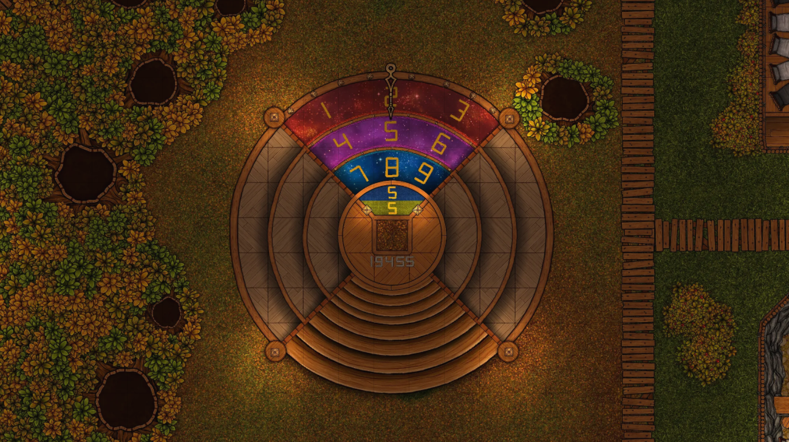
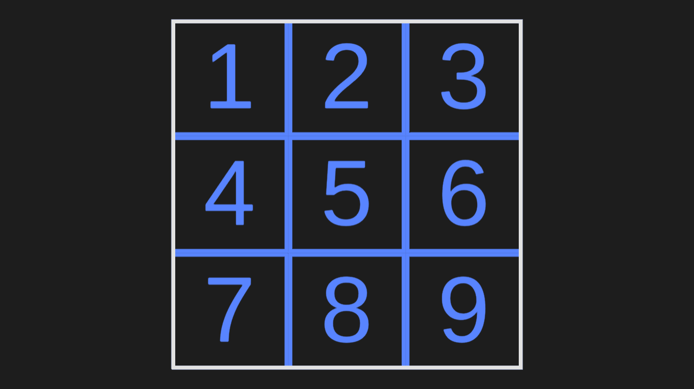
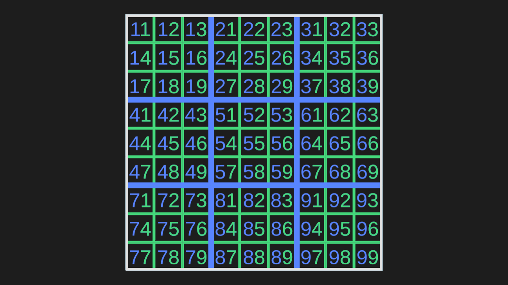
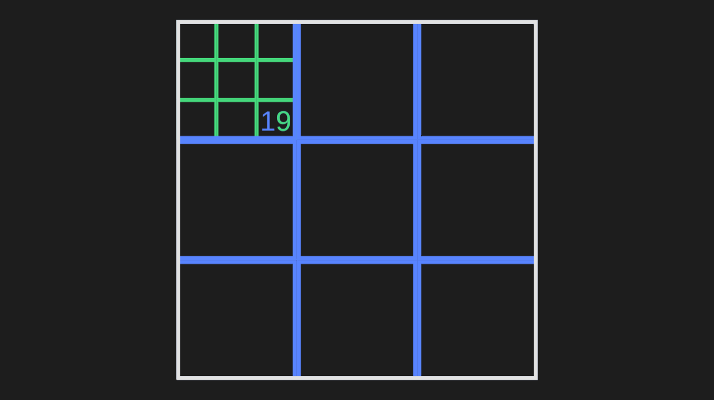
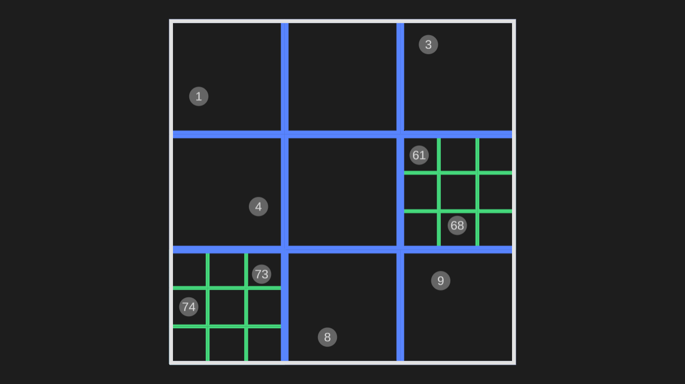

Dungeons and Dragons: Battle Royale is a module I created by adapting the D&D 5th edition ruleset.
This project presented several project-threatening challenges, including tracking the positions of all 8 teams across multiple game sessions without being slowed down by unnecessary detail.
I solved this problem by splitting the arena into blocks.
Only teams in the same block are able to fight each other, so the Dungeon Master can simply track which teams are in which blocks.
This had the added benefit of inspiring an arena-wide puzzle which incentivized players to engage in more exploratory and tactical aspects of the game.
The puzzle takes the form of 22 teleporters scattered throughout the arena which can be linked to travel between zones. Each teleporter is placed on a 2D plane, but can only take 1 number as input, meaning the players must understand the recursive coordinate system underlying the entire arena.
This recursive coordinate system works by subdividing the arena into 3x3 sets of zones with decreasing size. First, the entire arena is split into 9 blocks labeled 1 through 9.
These 9 zones can then be subdivided into 9 more zones each, giving us 81 total spaces. Notice that these new spaces are given a unique coordinate based on where they are at each level of subdivision.
The coordinates are not arbitrary; they serve as instructions to find the space to which they refer. For example, the coordinate 19 instructs us to enter the first zone at the highest level of subdivision, then the ninth zone within the next layer of subdivision. Just 5 levels of subdivision gives us an arena of 243x243, or 59,049 spaces that can be found using a 5 digit coordinate.
Note that this coordinate system solves the original problem (efficiently tracking teams' positions) particularly well. If a team does not share a first-layer zone with any other teams, then their position can be tracked with a single digit 1-9. If two or more teams share a first-layer zone, additional digits can easily be added to their positions to clarify where they are more precisely.
